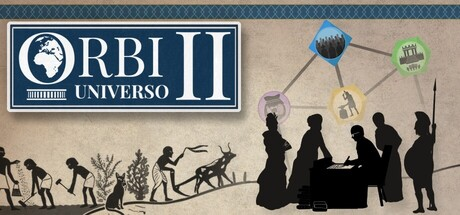
Orbi Universo II (2025)
Developpé et édité par Orbi Universo Team SARL
• Moteur : Unity
• Rôle : Programmeur
66 898 lignes de code écrites par moi-même.
61 239 lignes de code écrites par le game designer.
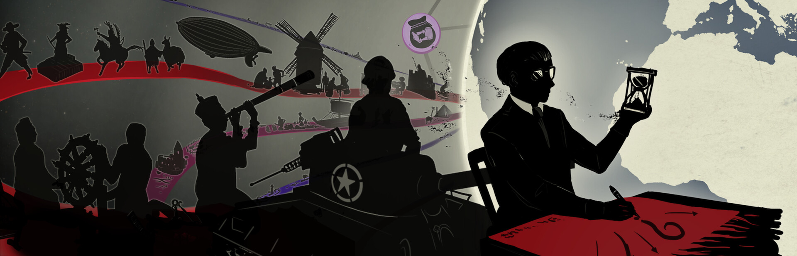
Contexte
5 ans après le succès de Orbi Universo, nous (l'équipe de Orbi Universo Team SARL) commençons le développement d'une suite encore plus ambitieuse.
Grâce à l'expérience acquise lors de nos précédents projets, nous étions maintenant confiants de pouvoir réaliser un jeu pouvant satisfaire l'exigence de nos joueurs et de pousser la vision originale de Orbi Universo encore plus loin : Une simulation détaillée de l'évolution des civilisations et les relations qui les lient entre elles.
• Rédaction de la documentation technique
• Programation des fonctionnalitées de base du systeme:
Simulation
API d'implémentation des mécaniques de jeu
Interface utilisateur
Menus
Prise en charge de plusieurs langages
Chargement et interpretation des fichiers de données
Sauvegarde de la progression du joueur
Rendu graphique
• Developpement d'un logiciel d'édition de carte du monde (plus d'info)
• Design de l'interface graphique et des effets visuels
Comme pour le premier opus, le code du projet est séparé en deux parties:
• Une écrite par le game designer, les règles du jeu en utilisant les fonctions que j'ai développées pour rendre l'implémentation des mécaniques de jeu le plus simple possible et le prototypage rapide.
Contrairement à la première version de Orbi Universo pour lequel j'ai créé un langage de programmation propre à l'implémentation des mécaniques de jeu et un interprèteur dédié, j'ai développé une API C# contenant des classes et des fonctions propres aux mécaniques de jeu implémentées par le game designer.
Les civilisations sont présentées sous la forme d'éléments appelés noeuds, qui représentent les concepts fondamentaux qui les caractérisent (Gouvernement, Technologies, Infrastructures, Armée, ...)
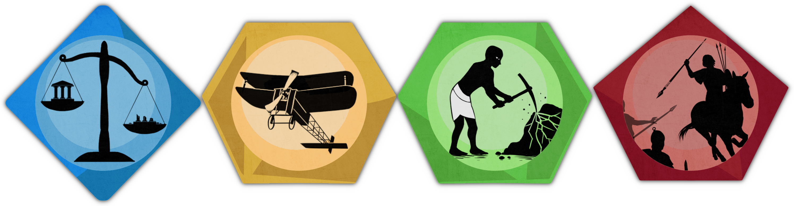
Concrètement, chaque type de noeud hérite d'une classe de base :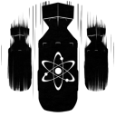
Voici un exemple de l'interface permettant d'implémenter l'arme nucléaire dans un noeud.Il suffit d'implémenter l'interface suivante:
public interface IWeaponOfMassDestruction
{
// Obtient l'origine de la frappe.
Region GetLauchSite();
// Obtient le temps nécessaire pour atteindre la cible.
float GetFlightDuration(Region launchingRegion, Region targetRegion);
// Obtient la force de la frappe.
float GetPower(Region launchingRegion, Region targetRegion);
// La frappe peut-elle partir de cette région ?
bool CanLaunch(Region launchingRegion);
// La frappe peut-elle atteindre cette région ?
bool CanTargetRegion(Region launchingRegion, Region targetRegion);
// Actions exécutées après un lancement.
void OnAfterLaunch(Region launchingRegion, Region targetRegion);
// Actions exécutées après une frappe.
void OnImpact(Simulation simualtion, Civilization launchingCivilization, Region launchingRegion, Region targetRegion, float power);
}
Des implémentations similaires existent pour toutes les fonctionnalités nécessaires à une civilisation, et permettent de facilement ajouter du contenu.
Financement
Le projet Orbi Universo II a été partiellement financé par le CNC, des fonds ont été levés pour la phase de préproduction et la phase de production.
Dans les deux cas, j'ai rédigé la partie technique du dossier de financement, décrivant les enjeux techniques et technologiques du projet.
Voici un extrait du document fourni au CNC :
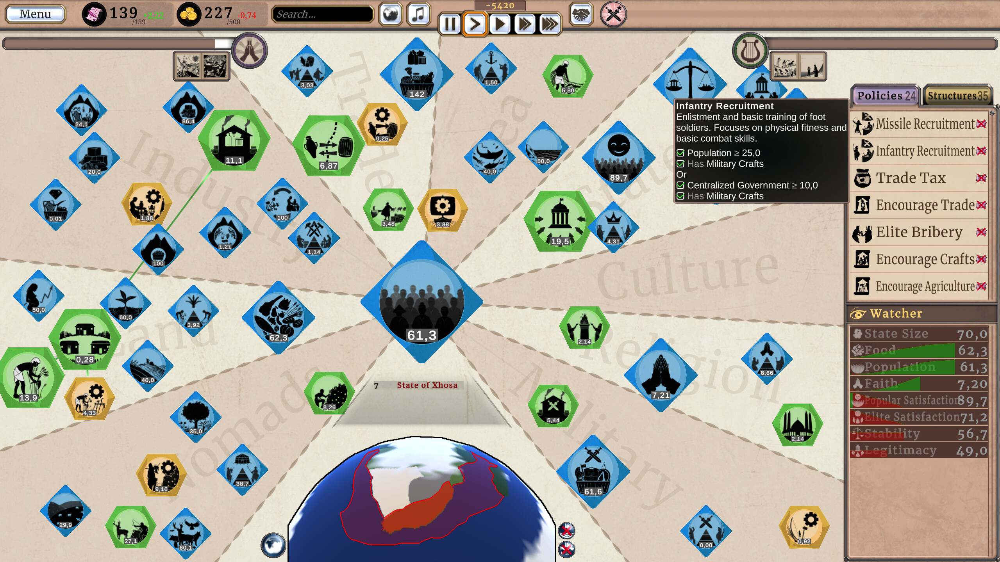
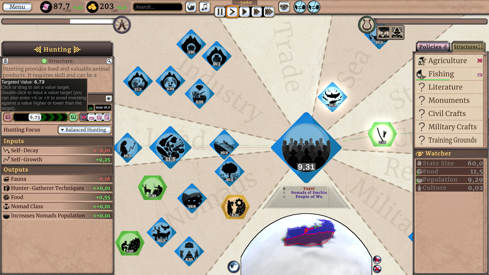
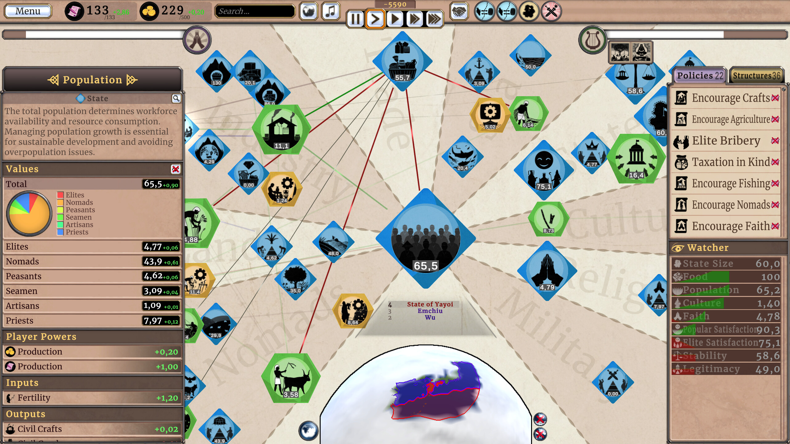
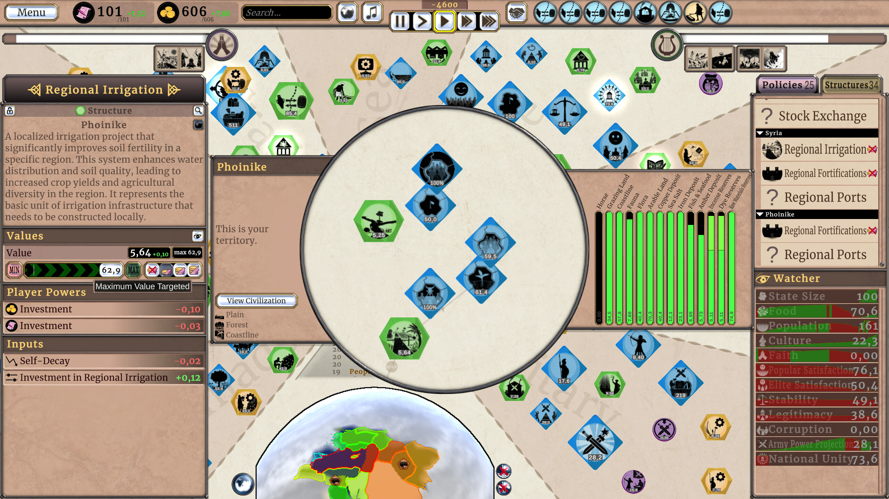
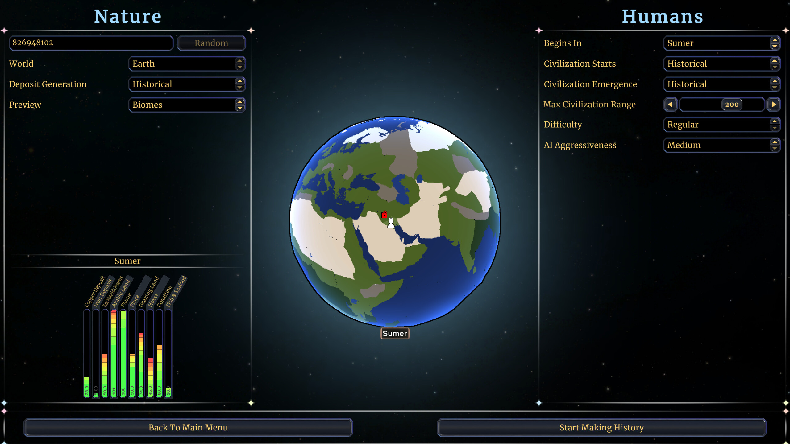
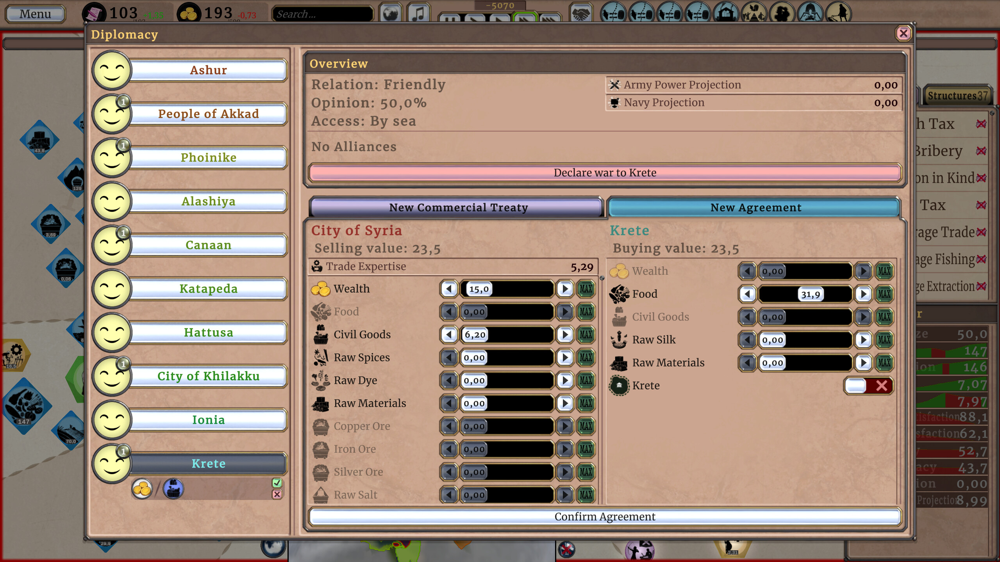
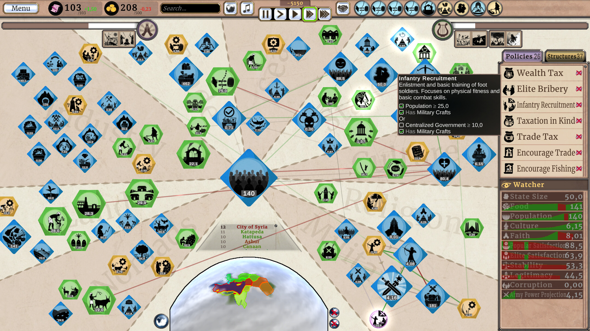
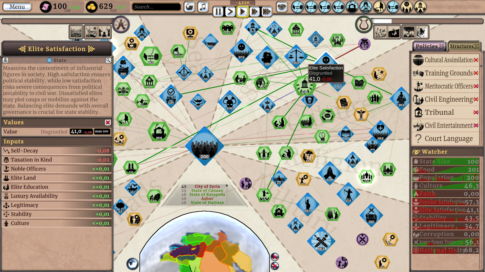
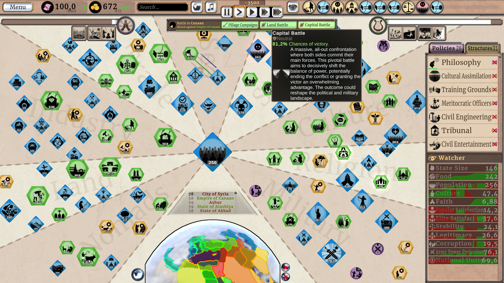
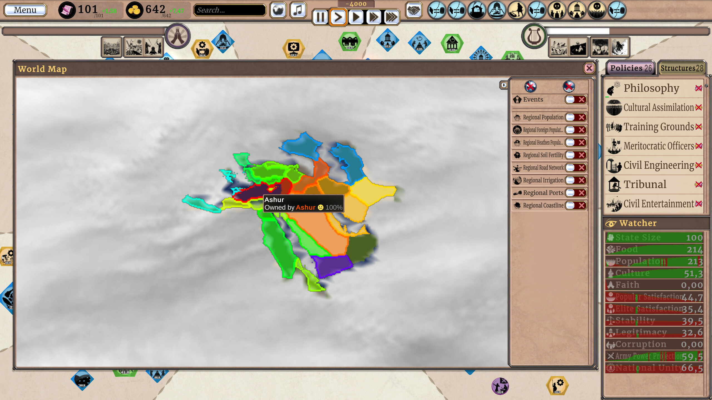